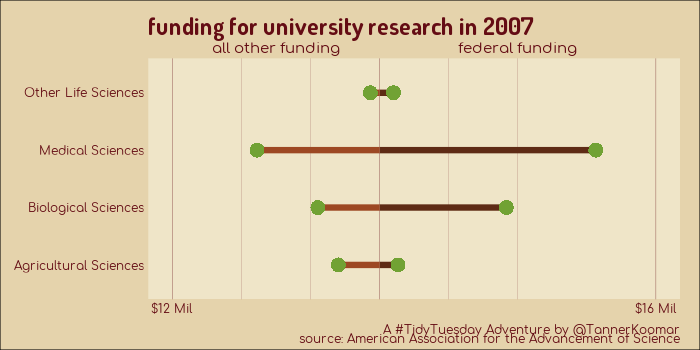

Tidy Tuesday: University Research Funding
Animated GIFs showing changes to funding of university research, broken down by speciality.
If you take a look at this table raw, it really is quite the mess. It is kind of hard to imagine data that is less tidy:
library(tidyverse)
library(gganimate)
library(showtext) ## for google fonts
font_add_google("Dosis")
font_add_google("Comfortaa")
showtext_auto()
download.file("https://www.aaas.org/sites/default/files/2018-11/UniDisc1.xlsx",
"2019-05-08_UniDisc1.xlsx")
readxl::read_excel("2019-05-08_UniDisc1.xlsx")
## # A tibble: 103 x 13
## `University R&D… X__1 X__2 X__3 X__4 X__5 X__6 X__7 X__8 X__9
## <chr> <dbl> <dbl> <dbl> <dbl> <dbl> <dbl> <dbl> <dbl> <dbl>
## 1 (budget authori… NA NA NA NA NA NA NA NA NA
## 2 <NA> 2007 2008 2009 2010 2011 2012 2013 2014 2015
## 3 Computer Scienc… 1696. 1709. 1837 1864. 1943. 1996. 2228. 2040. 2051.
## 4 <NA> NA NA NA NA NA NA NA NA NA
## 5 Environmental S… NA NA NA NA NA NA NA NA NA
## 6 Atmospheric Sci… 529. 491. 478. 488. 537. 522. 531. 531. 600.
## 7 Earth Sciences 1080. 1104. 1170. 1233. 1274. 1280. 1253. 1226. 1164.
## 8 Oceanography 1176. 1220. 1237. 1163. 1170. 1123 1132. 1133. 1098.
## 9 Other Environme… 393. 434. 470 520. 535. 550. 524. 524. 533.
## 10 Total Environme… 3178. 3250. 3356. 3404 3516. 3475. 3441. 3414. 3394.
## # ... with 93 more rows, and 3 more variables: X__10 <dbl>, X__11 <dbl>,
## # X__12 <chr>
We have a couple header rows and then disciplines, followed by several sub-disciplines (or none). In Excel, this looks rather inteligible because of bold formating, etc. We have none of that here and have to get a litle creative to separate and assign disciplines to sub-disciplines.
The main pattern we have here is that every discipline row is preceded by an NA value. Combining dplyr::lag(), which gets the last value in a vector with zoo::locf(), which replaces NA’s with the most recent non-missing value.
tot_dat <- readxl::read_excel("2019-05-08_UniDisc1.xlsx",
skip = 2, ## header junk
n_max = 47 ## 2nd table appears after here
) %>%
mutate(discipline = case_when( is.na(lag(X__1)) ~ X__1)) %>% ## get the category columns
select(X__1, discipline, everything()) %T>% ## these two lines are just for printing out the
{print(head(.))} %>% ## intermediary results
mutate(discipline = zoo::na.locf(discipline),
funding_source = "total") %T>%
{print(head(.))} %>%
filter(!is.na((X__1)),
!is.na(`2007`),
!str_detect(X__1, "Total")
) %>%
rename('sub_discipline' = 'X__1') %T>%
{print(head(.))} %>%
select(-`'07 - '17`) %>%
gather(`2007`:`2017`,
key = year,
value = budget) %T>%
{print(head(.))} %>%
mutate(budget = budget*1e6)
## # A tibble: 6 x 14
## X__1 discipline `2007` `2008` `2009` `2010` `2011` `2012` `2013` `2014`
## <chr> <chr> <dbl> <dbl> <dbl> <dbl> <dbl> <dbl> <dbl> <dbl>
## 1 Comp… Computer … 1696. 1709. 1837 1864. 1943. 1996. 2228. 2040.
## 2 <NA> <NA> NA NA NA NA NA NA NA NA
## 3 Envi… Environme… NA NA NA NA NA NA NA NA
## 4 Atmo… <NA> 529. 491. 478. 488. 537. 522. 531. 531.
## 5 Eart… <NA> 1080. 1104. 1170. 1233. 1274. 1280. 1253. 1226.
## 6 Ocea… <NA> 1176. 1220. 1237. 1163. 1170. 1123 1132. 1133.
## # ... with 4 more variables: `2015` <dbl>, `2016` <dbl>, `2017` <dbl>,
## # `'07 - '17` <dbl>
## # A tibble: 6 x 15
## X__1 discipline `2007` `2008` `2009` `2010` `2011` `2012` `2013` `2014`
## <chr> <chr> <dbl> <dbl> <dbl> <dbl> <dbl> <dbl> <dbl> <dbl>
## 1 Comp… Computer … 1696. 1709. 1837 1864. 1943. 1996. 2228. 2040.
## 2 <NA> Computer … NA NA NA NA NA NA NA NA
## 3 Envi… Environme… NA NA NA NA NA NA NA NA
## 4 Atmo… Environme… 529. 491. 478. 488. 537. 522. 531. 531.
## 5 Eart… Environme… 1080. 1104. 1170. 1233. 1274. 1280. 1253. 1226.
## 6 Ocea… Environme… 1176. 1220. 1237. 1163. 1170. 1123 1132. 1133.
## # ... with 5 more variables: `2015` <dbl>, `2016` <dbl>, `2017` <dbl>,
## # `'07 - '17` <dbl>, funding_source <chr>
## # A tibble: 6 x 15
## sub_discipline discipline `2007` `2008` `2009` `2010` `2011` `2012`
## <chr> <chr> <dbl> <dbl> <dbl> <dbl> <dbl> <dbl>
## 1 Computer Scie… Computer … 1696. 1709. 1837 1864. 1943. 1996.
## 2 Atmospheric S… Environme… 529. 491. 478. 488. 537. 522.
## 3 Earth Sciences Environme… 1080. 1104. 1170. 1233. 1274. 1280.
## 4 Oceanography Environme… 1176. 1220. 1237. 1163. 1170. 1123
## 5 Other Environ… Environme… 393. 434. 470 520. 535. 550.
## 6 Agricultural … Life Scie… 3453 3478. 3507. 3426 3476. 3614
## # ... with 7 more variables: `2013` <dbl>, `2014` <dbl>, `2015` <dbl>,
## # `2016` <dbl>, `2017` <dbl>, `'07 - '17` <dbl>, funding_source <chr>
## # A tibble: 6 x 5
## sub_discipline discipline funding_source year budget
## <chr> <chr> <chr> <chr> <dbl>
## 1 Computer Sciences Computer Sciences total 2007 1696.
## 2 Atmospheric Sciences Environmental Scie… total 2007 529.
## 3 Earth Sciences Environmental Scie… total 2007 1080.
## 4 Oceanography Environmental Scie… total 2007 1176.
## 5 Other Environmental Scie… Environmental Scie… total 2007 393.
## 6 Agricultural Sciences Life Sciences total 2007 3453
That looks much tidyr! Let’s do the same with the other table, a little bit more efficiently:
try(
readxl::read_excel("2019-05-08_UniDisc1.xlsx",
skip = 53,
n_max = 47
) %>%
mutate(discipline = case_when( is.na(lag(X__1)) ~ X__1),
discipline = zoo::na.locf(discipline),
funding_source = "federal"
) %>%
select(X__1, discipline, everything()) %>%
filter(!is.na((X__1)),
!is.na(`2007`),
!str_detect(X__1, "Total")
) %>%
rename('sub_discipline' = 'X__1') %>%
select(-`'07 - '17`) %>%
gather(`2007`:`2017`,
key = year,
value = budget) %>%
mutate(budget = budget*1e6)
)
OH NO! There is an empty row after the header that wasn’t in the other table, and it is throwing us off. Let’s just remov that pesky row and pretend this never happened.
fed_dat <- readxl::read_excel("2019-05-08_UniDisc1.xlsx",
skip = 53,
n_max = 47
) %>%
filter(!row_number() == 1) %>%
mutate(discipline = case_when( is.na(lag(X__1)) ~ X__1),
discipline = zoo::na.locf(discipline),
funding_source = "federal"
) %>%
select(X__1, discipline, everything()) %>%
filter(!is.na((X__1)),
!is.na(`2007`),
!str_detect(X__1, "Total")
) %>%
rename('sub_discipline' = 'X__1') %>%
select(-`'07 - '17`) %>%
gather(`2007`:`2017`,
key = year,
value = budget) %>%
mutate(budget = budget*1e6)
Finally, lets combine this all into one big tibble
dat <- bind_rows(fed_dat, tot_dat) %>%
spread(funding_source, budget) %>%
mutate(other = total-federal) %>%
gather(funding_source, budget, federal, other) %>%
mutate(year = as.numeric(year),
budget = ifelse(funding_source=='federal', budget, -budget)) %>%
arrange(discipline) %>%
mutate(
sub_discipline = factor(sub_discipline, ordered = T, levels = unique(sub_discipline))
)
A new theme
theme_fnd <- function(base_size = 11,
base_family = "Comfortaa",
base_line_size = base_size/22,
base_rect_size = base_size/22) {
theme_minimal(base_size = base_size,
base_family = base_family,
base_line_size = base_line_size,
base_rect_size = base_rect_size) %+replace%
theme(plot.background = element_rect(fill = '#e5d3ac'),
panel.background = element_rect(fill = '#efe5c8', color = NA),
panel.grid = element_line(color = '#640c14',
size = 0.15)) +
theme(plot.margin = margin(20,20,5,25),
text = element_text(colour = '#640c14'),
axis.text = element_text(colour = '#640c14'),
axis.text.y = element_text(margin = margin(2,2,2,20)),
axis.text.x.top = element_text(size = 11),
axis.ticks.x.top = element_blank(),
plot.title = element_text(family = "Dosis", size = 18, face = 'bold'),
plot.subtitle = element_text(family = "Dosis",
hjust = 1)
)
}
plot_1 <- dat %>%
filter( discipline != "Life Sciences") %>%
ggplot(aes(y = sub_discipline, color = funding_source)) +
geom_segment(aes(x = 0, xend = budget, yend = sub_discipline, color = funding_source),
size = 2.5) +
geom_point(aes(x = budget, y = sub_discipline, fill = discipline),
pch = 21, size = 8 , stroke = 0) +
scale_fill_manual(values = c('Physical Sciences' = '#fcaf43',
'Computer Sciences' = '#e61e28',
'Environmental Sciences' = '#71a234',
'Social Sciences' = '#207e76',
'Psychology' = '#8dc642',
'Mathematical Sciences' = '#26bdb2',
'Engineering' = '#f26630',
'Other Sciences' = '#c21a24'),
guide = guide_legend(title.position = 'top',
title.hjust = 0.5,
ncol = 2 )) +
scale_color_manual(values = c('#5e2b15', '#9d4823'),
guide = 'none') +
scale_x_continuous(breaks = c(-1.5e9,0,2e9),
minor_breaks = c(-.5e9,-1e9,.5e9,1e9,1.5e9),
limits = c(-1.5e9,2e9),
labels = c("$1.5 Mil", "", "$2 Mil"),
position ='bottom',
sec.axis = sec_axis(~.,
breaks = c(-0.75e9,1e9),
labels = c("all other funding", "federal funding")
)
) +
labs(y = element_blank(),
x = element_blank(),
title = "funding for university research in {closest_state}",
subtitle = "(excluding life sciences)",
caption = "A #TidyTuesday Adventure by @TannerKoomar\nsource: American Association for the Advancement of Science") +
theme_fnd() +
theme(legend.position = 'bottom',
legend.text = element_text(margin = margin(5,40,5,0)),
panel.grid.major.y = element_blank()) +
transition_states(
year,
transition_length = 2,
state_length = 1
)
anim_save(animation = plot_1, filename = "final_plot_1.gif", width = 700, height = 700)
plot_2 <- dat %>%
filter( discipline == "Life Sciences") %>%
ggplot(aes(y = sub_discipline, color = funding_source)) +
geom_segment(aes(x = 0, xend = budget, yend = sub_discipline, color = funding_source),
size = 3) +
geom_point(aes(x = budget, y = sub_discipline),
pch = 21, size = 7 , stroke = 0, fill = '#71a234') +
scale_color_manual(values = c('#5e2b15', '#9d4823'),
guide = 'none') +
scale_x_continuous(breaks = c(-12e9,0,16e9),
minor_breaks = c(-4e9,-8e9,4e9,8e9),
limits = c(-12e9,16e9),
labels = c("$12 Mil", "", "$16 Mil"),
position ='bottom',
sec.axis = sec_axis(~.,
breaks = c(-6e9,8e9),
labels = c("all other funding", "federal funding")
)
) +
labs(y = element_blank(),
x = element_blank(),
title = "funding for university research in {closest_state}",
caption = "A #TidyTuesday Adventure by @TannerKoomar\nsource: American Association for the Advancement of Science") +
theme_fnd() +
theme(legend.position = 'bottom',
panel.grid.major.y = element_blank()) +
transition_states(
year,
transition_length = 2,
state_length = 1
)
anim_save(animation = plot_2, filename = "final_plot_2.gif", width = 700, height = 350)

Tanner Koomar
PhD Candidate
My research interests include computational genetics, machine learning and science communication